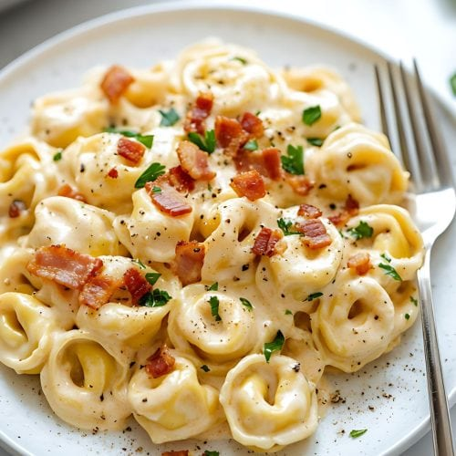

Home
Tortellini Carbonara

Tortellini Carbonara
This recipe is shows how to make a quick and easy dinner option that looks and tastes like a dish from a fancy italian restuarant.
Ingredients
- i 9 oz. pkg. refridgerated cheese tortellini
- 8 backon strips, chopped (I use precooked bacon)
- 1 cup heavy whipping cream
- 1/2 cup grated Parmesan cheese
- 1/2 cup chopped fresh parsley
Steps
- Cook tortellini according to package directions; drain.
- While tortellini cooks, cook bacon in skillet, remove, and drain on paper towel. If using precooked bacon, skip this step.
- In large skillet, combine the heavy cream, cheese, parsley, and bacon; heat through over medium heat.
- Stir in tortellini; serve immediately and enjoy!